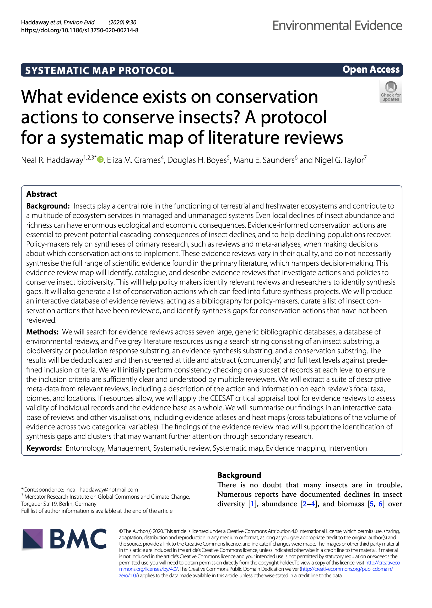
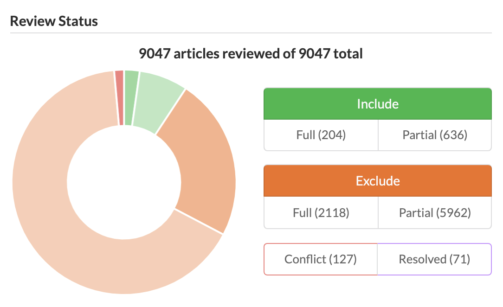
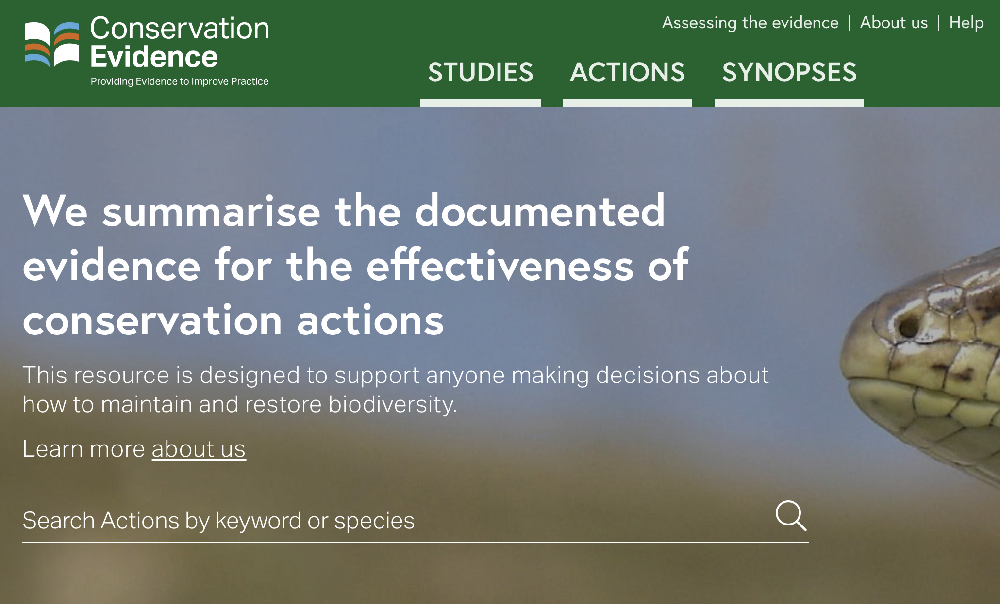
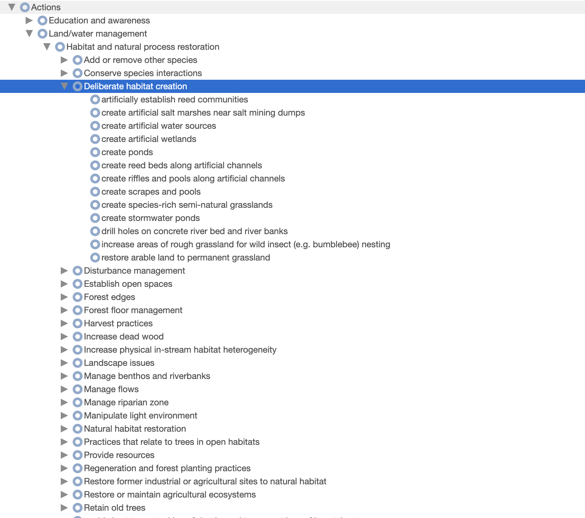
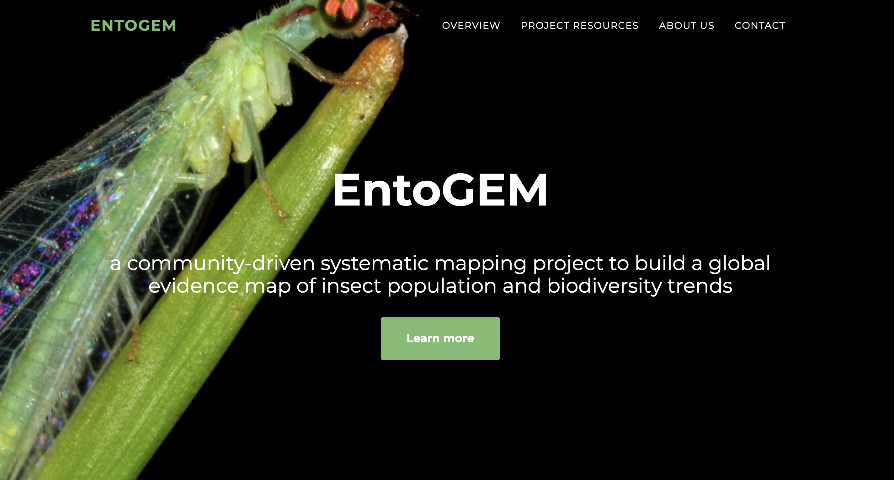
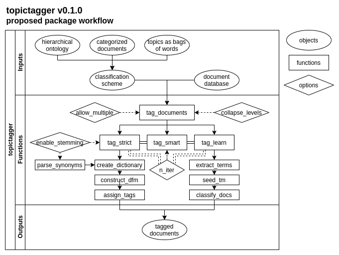

Methods
This project used three core methods:
The results of these constituent parts was then synthesised using a variety of evidence visualisations.
Review of reviews
We developed an a priori protocol that outlines the planned methods for a systematic map of literature reviews on insect conservation (Haddaway et al. 2020). The systematic map was conducted in accordance with guidance on evidence synthesis set out by the Collaboration for Environmental Evidence (CEE 2018), and the protocol and final review are reported in accordance with the ROSES reporting standards for systematic maps (Haddaway et al. 2018). We provide a summary of the methods used here. For further details, see the protocol (Haddaway et al. 2020).
We searched for evidence reviews across seven large, generic bibliographic databases, a database of environmental reviews, and five grey literature resources using a search string consisting of an insect substring, a biodiversity or population response substring, an evidence synthesis substring, and a conservation substring.

The 27,283 results were deduplicated and then screened at title and abstract (concurrently) against predefined inclusion criteria. The public project page for the review is accessible on the SysRev review management platform. We initially performed consistency checking on a subset of abstracts to ensure the inclusion criteria were sufficiently clear and understood by multiple reviewers.
A total of 9,047 unique records were screened at title and abstract level. We extracted a total of 599 unique insect conservation actions and supplementary notes from 840 relevant review abstracts.
We plan to continue extracting data from full texts and publish the systematic map on a voluntary basis. This output will not directly feed into the outputs of this project, but any additional conservation actions discovered from reading full texts will be highlighted and passed to a refinement of the models described below in a ‘living’ analysis.
We will extract a suite of descriptive meta-data from relevant reviews, including a description of the action and information on each review’s focal taxa, biomes, and locations. If resources allow, we will apply the CEESAT critical appraisal tool for evidence reviews to assess validity of individual records and the evidence base as a whole.

The review of reviews will include targeted searhes for insect conservation actions from Conservation Evidence, which lists actions across a wide variety of environmental management topics (e.g. bat conservation, amphibian conservation, bee conservation, forest conservation, and natural pest control). These synopses are somewhat systematic approaches to collating and summarising representative research on conservation and environmental management actions. Whilst there are no synopses that focus on insects collectively, some are directly relevant (e.g. bee conservation), whilst others contain specific actions relevant to insects.
We constructed a tool to scrape conservation actions from the Conservation Evidence website in R. We downloaded 2,400 actions catalogued by Conservation Evidence as a plain text file and used text mining to extract the summary for any actions mentioning insect taxa or pollinators. We manually screened these 279 action summaries and extracted any actions that were potentially relevant and had not been identified mistakenly (e.g. actions about other pollinating groups such as bats), resulting in 164 conservation actions that were potentially relevant to insects.
In addition, through contacts with researchers at Conservation Evidence, we became aware of an ongoing synopsis focusing on terrestrial macroinvertebrates (with a particular emphasis on Lepidoptera) led by Andrew Bladon at the University of Cambridge. We were therefore able to obtain an additional set of candidate actions from this ongoing, relevant work and merge these with the actions scraped from published Conservation Evidence summaries.
Ontology contruction
The long list of conservation actions described above was refined to remove redundant terms and subsetted into 7 subject categories prior to assembling a draft ontology. These categories were necessary in order to provide experts at the workshop with a manageable number of actions and to allow experts to be provided with actions relevant to their expertise as far as possible. The following groups were created: aquatic; farmland; forest; grassland; policy; urban; and other.
Expert stakeholders were recruited in three main ways: systematic searching; a public call; and snowballing suggestions from existing experts. This combination approach was selected in the hopes of minimising risks of bias, such as: selection bias (choosing people we were aware of); confirmation bias (choosing people with similar views and opinions); subject bias (an overrepresentation of experts working on certain actions, biomes, regions or taxa); geographical bias (an overrepresentation of people from some regions, e.g. Europe/North America); language bias (an overrepresentation of English or US/British English speakers). We are still very aware of a lack of balance in our final set of stakeholders, but we tried hard to minimise this.
Firstly, a The following search string was used on 25th June 2020: “(TI=("insect conservation" OR "conservation of insects") OR AB=("insect conservation" OR "conservation of insects") OR AK=("insect conservation" OR "conservation of insects")) AND PY=(2017 OR 2018 OR 2019 OR 2020) AND WC=(ECOLOGY OR ENTOMOLOGY OR BIODIVERSITY CONSERVATION OR ENVIRONMENTAL SCIENCES)”; where TI = title words, AB = abstract words, AK = author keywords, PY = publication year, WC = Web of Science subject categoryhighly specific search of Web of Science Core CollectionsConsisting of the following indexes: Science Citation Index Expanded (SCI-EXPANDED) 1900-present, Social Sciences Citation Index (SSCI) 1900-present, Arts & Humanities Citation Index (A&HCI) 1975-present, Conference Proceedings Citation Index-Science (CPCI-S) 1990-present, Conference Proceedings Citation Index- Social Science & Humanities (CPCI-SSH) 1990-present, Emerging Sources Citation Index (ESCI) 2015-present was conducted, resulting in 84 relevant research articles on insect conservation in the last 3 years (in order to increase the likelihood that emails were still viable). From these results, we obtained 76 unique email addresses for corresponding authors. Secondly, we invited known expert stakeholders from our own networks and made use of social media to widen the reach of the call, emphasising the need for representation from low- and middle- income country participants. Together, recruitment from our own networks, social media and snowballing resulted in an additional 34 contacts. A total of 110 experts were therefore contacted with a request to participate.

A total of 45 expert stakeholders participated in two 3-hour workshops held at two different times to account for time zones on the 11th and 13th August 2020. The workshops were coordinated by the authors. During the workshops, participants were provided with the subsetted list of actions for their group and were asked to cluster them based on similarity in the approach used. Some experts were given more than one group where the number of actions were smaller. Following the workshop, a small minority of actions remained to be nested into the ontology. We finalised the ontology based on the existing structure.
The final ontology was translated into a web-based version (xxx). This resource is a highly useful resource for conservation frameworks and text analysis and has therefore been made Open Access.
Semi-supervised topic modelling
Assembly of evidence base
We aimed to assemble an evidence base for automated research gap analysis that was comprehensive enough to have a high likelihood of being representative of the research landscape as a whole. However, there is a trade off with the need for a manageable set of records to allow complex topic modelling, which can be computationally demanding. We were able to start from the set of >138,000 search results from the EntoGEM project as a basis.

EntoGEM is an ongoing project that aims to conduct a community-driven systematic map of all research literature on insect population trends. As part of this work, systematic searches for relevant evidence were already conducted across 18 bibliographic databases and other resources. The resultant records focused on all aspects of insect populations, not just insect conservation actions.
In order to obtain a more manageable number of records, we filtered this database using a set of conservation terms, which resulted in 49,935 records.
'Dictionary methods' to tag studies containing conservation actions (and other ontologies)
We used the expert ontology to create a nested dictionary of insect conservation actions, where each entry was composed of key terms and synonyms extracted from the entries in the ontology. More specific action classifications (e.g. those at the tip of the ontology) were included in the definitions of higher-level actions. For example, the action "restrict the sale of problem species in garden centers and pet shops" is defined by the terms "problem species", "garden centers", and "pet shops". This action and its terms are included in the definition of the higher-level action "enforce invasive species control", along with its sister action "increase biosecurity checks" which has its own nested actions and their associated terms. Any article classified as "restrict the sale of problem species in garden centers and pet shops" will also automatically be classified as "enforce invasive species control" and the higher-level actions "Compliance and enforcement" and "Law & policy".
Using the same nested dictionary structure, we constructed a dictionary of biomes based on the IUCN Red List Habitats Classification Scheme (Version 3.1.); for example, "caatinga", "miombo", and "mulga" are all terms included in the definition of "dry savanna" which is itself included in the definition of "savanna" along with "moist savanna" and its descendants. We also created a nested dictionary of cities, regions, countries, and continents based on the World Cities Database and the UN country classification scheme. We removed cities that are common words in English (e.g. Of, Turkey; Same, Timor-Leste; Same, Tanzania; Young, Australia) or within the insect conservation literature (e.g. Male, Maldives and Pest, Hungary). For common regional names shared across countries (e.g. "Northern", "Central"), we appended the region to the name of the country to avoid ambiguity in the dictionary. To tag insect taxa, we used a dictionary of insect orders based on the GBIF Taxonomy, with synonyms including common names and genus names.
Using the evidence base and our four dictionaries (conservation actions, biomes, geographic regions, and insect taxa), we created four document-feature matrices where each row represents one of the articles in the evidence base, and each column in the matrix represents a dictionary entry and its associated terms. Counts of how many terms from a dictionary entry appeared in an article were used to classify each article. Although many articles were matched to multiple topics, the maximum count was used as the primary classification for actions, countries, habitats, and insect taxa for each article.
'Semi-supervised topic modelling' to classify remaining studies
To classify articles that were not tagged with a conservation action using the dictionary approach, we trained a model to probabilistically assign each remaining article to one of the top-level conservation actions (i.e. Land/water protection, Land/water management, Species management, Education & awareness, Law & policy, or Livelihood, economic, and other incentives). Because the dictionary approach mapped too few papers to some approaches to provide adequate sample sizes for training the model, several actions related to education, law, and livelihood were grouped as 'Unclassified Human Dimensions' for the model training dataset. To reduce the risk of articles being mistakenly classified to one of our conservation actions, we randomly sampled 1500 articles from the EntoGEM database that were not included in our subset of conservation articles and added these unrelated articles to those in our evidence base. By adding this "noise" to the model input, we were able to add a topic into which the model could classify articles that did not match any of our main conservation actions.

To build the topic model, we extracted key phrases from articles using the mine_terms() function from the R package topictagger (Grames and Haddaway, 2020). We refined the list of possible phrases to only include phrases which appeared at least three times across the evidence base in order to reduce the chance of the model identifying key phrases as being unique to a topic due to their rarity (e.g. the name of a specific national park). We also filtered out terms that are generic and uninformative (e.g. "results indicate" or "positively correlated"), which can lead to higher probability of an article being included in a common topic simply because the phrase is common. We also removed terms not associated with article content that are the result of the evidence base being pulled from bibliographic databases (e.g. "full abstract" or "copyright holder").
We used the final list of terms to create a document-feature matrix where each row represented an article from the evidence base and the additional noise, and each column represented one of the final phrases. This matrix was used to fit a symmetric multinomial model using the glmnet function in the R package glmnet v.4.0.2 (Friedman et al. 2010), which we used to predict classifications for articles that were not tagged by the dictionary approach. The output of is a matrix of probability of classification to each topic for each previously unclassified article. We classified articles that had at least a 0.30 probability of inclusion in a topic as belonging to it, and marked all articles that were classified as "noise" or with a lower than .30 probability of inclusion in a topic as unclassified.
Visualisation and analysis
General approach
The core output from this project is a ‘backend’ database that holds >40,000 bibliographic research records, each one ‘tagged’ according to four key dimensions (actions, biomes, regions and taxa). Many articles could not be tagged with one of our key dimensions because the data was missing from the title, abstract, and keywords (e.g. in the case of taxa) or the model was uncertain how to classify an article (e.g. in the case of conservation actions). In order to convey the nature of this evidence base, we must visualise patterns in terms of the absolute and relative volume of evidence.
In order to help identify research gaps (and clusters), we aimed to plot the volume of evidence identified across multiple dimensions concurrently. This is challenging given the four dimensions we have investigated (actions, biomes, regions, taxa), and given the hierarchical, complex nature of some of these (in particular, taxa, regions and actions). As a result of this complexity and multidimensionality, we supplement our static figures here with an interactive platform, where users can decide the scale of each dimension and which dimensions to plot together. The plots in our results are therefore intended to act as an indication for the kind of information held within our database.
Evidence atlases and heat maps
We present the volume of evidence identified in our initial set of studies using a set of ontologies. The methods that we have developed can be very easily refined to incorporate different ontologies (e.g. author affiliations), using further refinements to the existing ontologies (e.g. functional groups of taxa), and based on modified sets of research records (e.g. incorporating biodiversity action plans and other grey literature). The results are therefore just an indication of what is possible. Further consultation with expert stakeholders would be necessary to both: 1) confirm whether a lack of records corresponds to a sensible research gap; and 2) establish additional sources of information and ontologies on which further refinements could be based. Such refinements could be conducted rapidly with minimal human inputs.
Project workflow